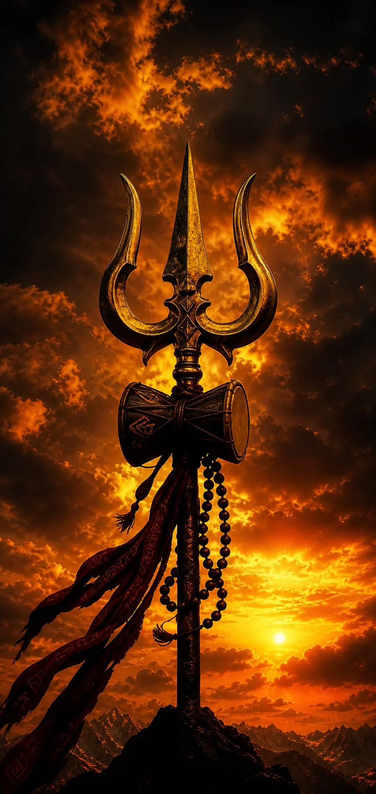
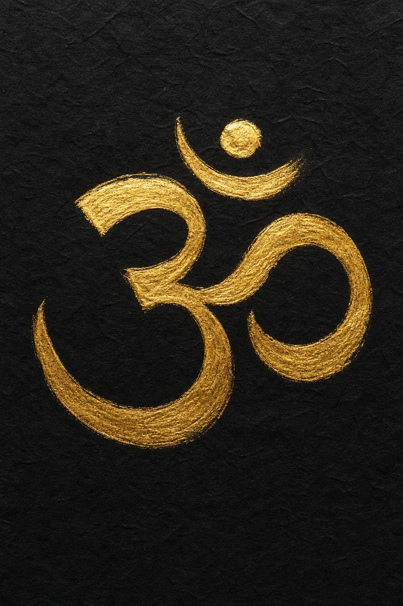
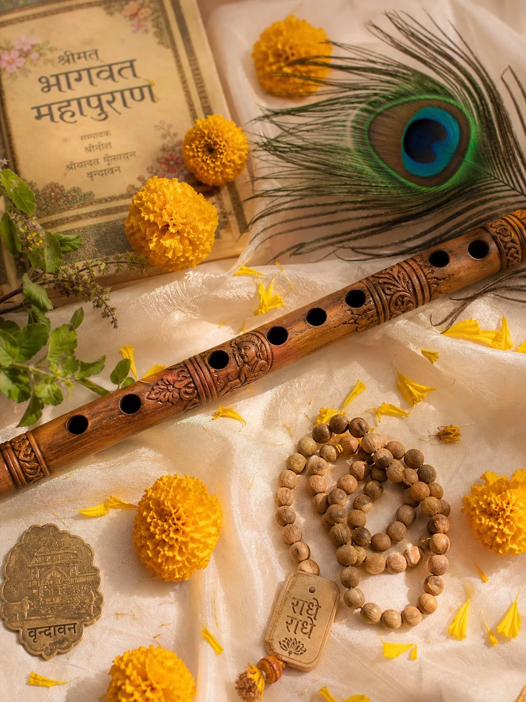
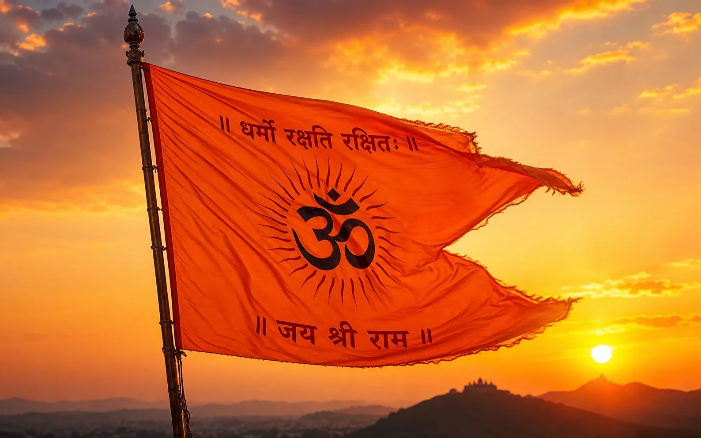

Bhai sach bataun? Indian digital creator space mein apni identity ko spiritual bio se ground karna sabse tagda permanent connection banata hai. Apne profile par Devanagari Hindi ya Sanskrit shloka ke sath Trishul 🔱 emoji lagana turant community pride aur calm attitude dikhata hai.
✦ Niche diya gaya har ek bio under 150 characters (Instagram bio limit) hai aur har mobile screen par saaf dikhta hai.
🎯 Keyword Intent Clarification: This page is curated specifically for
bold Kattar Mahakal attitude and Ujjain Mahakaleshwar status lines. If your creator branding requires calm, peaceful Himalayan meditation quotes, explore our dedicated
Har Har Mahadev & Kedarnath Bio Guide.
⚡ Quick Answer: sabse best Mahakal bio kaunsa hai?
Agar aapko sirf ek bio choose karna hai, toh devotional + readable + strong identity wali line best perform karti hai: काल भी उसका क्या बिगाड़े जो भक्त हो महाकाल का। 🔱 Ye short hai, memorable hai, aur profile dekhte hi vibe clear kar deta hai.
Fast pick guide: attitude profile ke liye Mahakal one-liner, calm spiritual profile ke liye ॐ नमः शिवाय, soft devotional vibe ke liye राधे राधे, aur temple/travel page ke liye Kedarnath ya Ujjain wali line best rehti hai.
- Short bio chahiye? Section 7 open karo.
- 2-line ready bio chahiye? Section 8 se direct copy karo.
- Girls / soft vibe? Section 9 best rahega.
- Boys / royal attitude? Section 10 se pick karo.
- Symbols aur stylish formatting? Section 12 check karo.
AY
Written by Ansh Yadav
Ansh Yadav is the Founder & Editor at CaptionStudio.in based in Gorakhpur, Uttar Pradesh. Active in India's creator economy since 2023, Ansh focuses on mobile Hindi micro-copy and creator SEO strategy. Connect on Instagram @ansh7.0k.
📖 Why Spiritual Bios Build Deep Follower Connection
Across India's digital ecosystem, your Instagram bio is your handshake. When viewers visit your profile, a grounded spiritual quote instantly communicates personality and shared heritage. Lord Shiva (Mahadev) represents unshakeable inner peace combined with fierce protection against negative karma.
Using these copy-paste formulas ensures your bio is structured with clean line spacing and verified Unicode symbols (like ॐ, 🔱, 🚩, and 📿) that render crisp on iPhone and Android displays.
📚 Authentic Historical Citations:
1. Shiva Purana Archives & Devanagari Script Unicode Standardization Records.
2. Indian Social Media Creator Community Demographics Survey (2026).
🛠️ How this page was improved for quality
Is page ko sirf caption-list nahi rakha gaya. Humne isse intent-based library banaya hai — taaki visitor directly apni need ke hisaab se short bio, 2-line bio, girls bio, boys bio, symbol combo, aur travel bio tak jump kar sake.
- Most bios ko Instagram bio character limit ke around rakha gaya hai.
- Copy boxes ko mobile readability aur clean line spacing ke hisaab se group kiya gaya hai.
- Unreadable symbol spam avoid kiya gaya hai, kyunki clean devotional bios zyada professional lagte hain.
- Devotional tone ko respectful rakha gaya hai — bhakti dikhane ke liye, kisi aur ko target karne ke liye nahi.
📋 TABLE OF CONTENTS (TAP TO JUMP)
1. Kattar Mahakal Attitude Bio (For Boys & Girls) 🔱
Short, fierce one-liners for creators who want unshakeable Mahakal attitude on their profile.
भक्त महाकाल का 🔱
काल भी उसका क्या बिगाड़े जो भक्त हो महाकाल का। 🔱
ॐ नमः शिवाय 📿
कट्टर शिव भक्त 🔱 जय श्री महाकाल।
अकाल मृत्यु वो मरे जो काम करे चांडाल का। 🔥
शिव की शरण में बेखौफ जिंदगी। 🏔️
ना किसी से ईर्ष्या, ना किसी से होड़, मेरी अपनी मंजिल, शिव का मोड़।
भोलेनाथ का दिवाना 🔱
महादेव के दर का भिखारी 🤍
त्रिशूल धारी की कृपा से सब मंगल। ✨
मेरे महाकाल की मर्जी के बिना पत्ता भी नहीं हिलता।
शिव ही सत्य है, शिव ही सुंदर है। 🌸
जिंदगी बेहाल है फिर भी सब संभाल लेंगे क्योंकि साथ महाकाल है।
डमरू वाले का दास 📿
हर हर महादेव 🔱🚩
राजाओं के राजा, उज्जैन के महाराजा महाकाल। 👑
खौफ सिर्फ महाकाल का, बाकि सब बेखौफ। 😎
शमशान के वासी शिव 🔱
भोले की भक्ति में लीन 🌿
जय श्री महाकाल 🔱
💡 Creator Framing: Pairing Mahakal Bios with Dark Aesthetics
When you select a fierce Mahakal bio line like "खौफ सिर्फ महाकाल का", your Instagram visual grid should match that energetic density. We recommend using high-contrast black-and-white profile pictures (DP) or moody temple architecture flatlays. This consistency keeps followers scrolling through your Reels tab longer.

📌 Save Pin
Trishul & Damru Power · 4k Kattar Mahakal Aesthetic
2. Om Namah Shivaya Sanskrit Shlokas 📿
Timeless Vedic Sanskrit mantras in clean Devanagari script for deep spiritual grounding.
ॐ त्र्यम्बकं यजामहे सुगन्धिं पुष्टिवर्धनम्। 🌿
कर्पूरगौरं करुणावतारं संसारसारम् भुजगेन्द्रहारम्। ✨
ॐ नमः शिवाय शुभं शुभं कुरू कुं कुरू शिव नमः ॐ।
नागेन्द्रहाराय त्रिलोचनाय भस्माङ्गरागाय महेश्वराय। 🔱
ॐ तत्पुरुषाय विद्महे महादेवाय धीमहि तन्नो रुद्रः प्रचोदयात्। 📿
शिवो दाता शिवो भोक्ता शिवः सर्वमिदं जगत्।
वन्दे शम्भुमुमापतिं सुरगुरुं वन्दे जगत्कारणम्। 🌸
मृत्युंजय महादेवाय नमोस्तुते। 🔱
ॐ हौं जूं सः ॐ भूर्भुवः स्वः ॐ।
शान्तं पद्मासनस्थं शशिधरमुकुटं पञ्चवक्त्रं त्रिनेत्रम्। ✨
📿 Mantra Significance Breakdown (What You Are Posting)
Never post a Sanskrit shloka without understanding its spiritual vibration. The famous Mahamrityunjaya Mantra (ॐ त्र्यम्बकं यजामहे...) is a revered Vedic prayer to the three-eyed Lord Shiva asking for nourishment and liberation from negative attachments. Placing it on your profile creates a peaceful, meditative digital atmosphere.

📌 Save Pin
Sacred Vedic Calligraphy · Gold Shloka on Black Paper
3. Radhe Krishna & Vrindavan Vibes 🦚
Peaceful, soft spiritual bios inspired by Vrindavan devotion, bansuri flutes, and Radhe Radhe love.
राधे राधे 🤍🦚
कृष्ण की दीवानी 🌸
बांसुरी वाले के भरोसे जिंदगी। 🦚
वृंदावन की रज मिल जाए तो जीवन सफल। ✨
राधा सा प्रेम और कान्हा सी मुस्कान। 🤍
श्री राधे कृष्ण की शरण 📿
सांवरे की प्रीत में लीन 🌷
जय श्री कृष्णा 🚩
मेरा हर दिन श्री राधे के नाम। 🌸
कान्हा की मुरली की धुन 🎶

📌 Save Pin
Vrindavan Devotion · Carved Bansuri & Peacock Feather
4. Jai Shri Ram Kattar Hindu Pride Bio 🚩
Bold Sanatan Dharma identity lines honoring Ayodhya pride and King Rama.
जय श्री राम 🚩
सनातन में आस्था 🚩
राम नाम ही सत्य है। 🏹
अयोध्या के राम हमारे हैं। 🏰
श्रद्धा, संस्कार और विश्वास 🚩
श्री राम जय राम जय जय राम 📿
बजरंगबली के भक्त 🚩🔱
धर्म की रक्षा, राम का मार्ग। ✨
सनातन ही आदि है, सनातन ही अनंत।
जय श्रीराम 🚩🏹

📌 Save Pin
Sanatan Ayodhya Pride · Saffron Flag at Golden Sunset
5. Kedarnath & Ujjain Mahakaleshwar Travel 🏔️
For mountain travel Reels and Ujjain Mahakaleshwar temple check-ins.
सुकून सिर्फ महादेव के दर पर है। 🏔️
केदारनाथ की वो हसीन वादियां और शिव का साथ। 🤍
चलो बुलावा आया है महादेव ने बुलाया है। 🔱
काशी के घाट और भोले का आशीर्वाद। 🌊
महाकाल लोक की दिव्य भोर ✨
6. Mahakal Shayari DP Status 🔥
High attitude Hindi status lines for Instagram DP and Bio quotes.
हम महादेव के दिवाने हैं, हमारी फितरत में सिर झुकाना नहीं। 😎🔱
माया को चाहने वाले बिखर जाते हैं, और महादेव को चाहने वाले निखर जाते हैं। 🌸
दौलत छोड़ी, दुनिया छोड़ी, बाकि सब छोड़ेंगे, महादेव के दर से नाता कभी ना तोड़ेंगे।
खौफ फैलाना चांडाल का काम है, हम शिव भक्त हैं हमारा तो नाम ही काफी है। 🔥
हर हर महादेव बोल कर देखो, जिंदगी के साए दुख हल हो जाएंगे। 🤍
🧠 Mahakal, Mahadev aur Bholenath mein difference kya hai?
Mahakal wali line usually power, protection aur fearless attitude dikhati hai. Mahadev wali line zyada calm, spiritual aur timeless lagti hai. Bholenath wali bio warm, simple aur relatable devotion vibe deti hai. Isliye bio choose karte waqt pehle ye decide karo ki tumhari profile ki energy kya hai — fierce, peaceful, ya soft devotional.
Google-style helpfulness ke perspective se bhi ye section important hai, kyunki user ko sirf line nahi milti — usse context bhi milta hai ki kaunsi line kis profile pe best lagegi.
7. Short Mahadev & Bholenath Bio Ideas ✨
Ye section un logon ke liye hai jinko clean, short, mobile-friendly bio chahiye. Short bios zyada readable hote hain aur profile first look better lagti hai.
महादेव मेरी पहचान। 🔱
भोलेनाथ का बंदा। 🤍
शिवमय जीवन। 🕉️
त्रिशूल वाली vibe. 🔱
कैलाश का कनेक्शन। 🏔️
भक्ति मेरी ताकत। 📿
हर हर महादेव। 🔥
सुकून = महादेव। 🤍
डमरू वाले के साथ। 🥁
नीलकंठ मेरे नाथ। 🕉️
महाकाल मेरी ढाल। 🖤
शिव की छाया में। 🌙
भोले की कृपा अनंत। ✨
शंकर मेरे अंदर। 🔱
बस नाम महादेव का। 📿
Rudra mode on. 🔥
शिव भी, शून्य भी।
काशी से दिल का रिश्ता। 🌊
भोले का आशीर्वाद। ✨
Mahadev in heart. 🔱
8. 2-Line Ready-to-Paste Mahakal Bios 📝
Agar aapko profile pe thoda structured look chahiye, toh 2-line bios best hain. Inhe Notes app me copy karke line-break ke saath Instagram bio me paste karo.
ॐ नमः शिवाय 📿
दिल में महादेव, चेहरे पर सुकून।
महाकाल का भक्त 🔱
बाकी दुनिया अपने track पर।
हर हर महादेव 🤍
जहाँ शिव, वहीं मेरा मन।
भोलेनाथ का नाम 📿
यही मेरी सबसे बड़ी identity।
कैलाश वाली शांति 🏔️
महादेव वाली ताकत।
जय श्री महाकाल 🔱
डर नहीं, बस विश्वास।
भस्म भी स्वीकार 🔥
भक्ति भी अपार।
शिव मेरे आरंभ 🕉️
शिव ही मेरा अंत।
रुद्र के चरणों में 📿
बाकी सब temporary।
उज्जैन से connection 🔱
दिल से devotion।
महादेव का सहारा 🤍
life ka sabse bada Sahara.
शिव की शरण 🌙
यही मेरी real luxury।
डमरू की धुन 🥁
दिल की धड़कन महादेव।
महाकाल की मर्ज़ी 🔱
यही final decision।
शिव का नाम काफी है 📿
बाकी proof की जरूरत नहीं।
भोलेनाथ के रंग में 🌿
थोड़ा calm, थोड़ा fierce।
त्रिशूल मेरी vibe 🔱
भक्ति मेरा style।
काशी का सुकून 🌊
महादेव का जुनून।
नीलकंठ का स्मरण 🕉️
मन अपने आप स्थिर।
महादेव साथ हैं 🤍
तो सफर भी प्रसाद है।
9. Mahakal Bio for Girls / Soft Spiritual Vibes 🌸
Girls profiles ke liye sab lines sirf cute nahi honi chahiye — unme faith + grace + identity ka balance hona chahiye. Yahan soft devotional options diye gaye hain.
शिव की शरण में soft soul 🌸
राधे राधे + हर हर महादेव 🤍
महादेव की बेटी, दिल से calm ✨
भोलेनाथ की कृपा, मुस्कान मेरी vibe 🌷
सांवरी नहीं, शिवमयी हूँ 🕉️
कानों में मंत्र, दिल में महादेव 📿
देवो के देव, मेरी energy source 🔱
महादेव के नाम की simplicity 🤍
शिव भक्ति + feminine grace 🌸
कैलाश जैसी शांति चाहिए 🏔️
रुद्राक्ष, सुकून और devotion 📿
भोले के भरोसे life beautiful ✨
बिंदिया छोटी, faith bada 🔱
शिव की छाया, मन में माया नहीं 🤍
राधे-शिव vibes only 🦚
10. Royal Mahakal Bio for Boys 😎
Boys ke liye best bios woh hote hain jo over-aggressive na ho kar bhi self-respect, stability aur Mahakal faith ko clearly show karein.
राजाओं के राजा महाकाल 👑
महाकाल naam hi kaafi hai 🔱
भोलेनाथ ka banda, seedha aur solid 😎
शिव की भक्ति, royal meri entry 👑
खामोश हूँ, कमज़ोर नहीं — महाकाल साथ हैं 🔥
त्रिशूल वाली personality 🔱
रुद्र vibe, clear mind, no drama 😎
भोले की शरण, sher jaisi himmat 🐅
उज्जैन ka connection, dil ka protection 🔱
महादेव ke naam pe stand strong 🖤
ना flex, na fake — bas Mahakal faith.
डमरू wale ka dost 🥁
कैलाश se inspired, hustle grounded 🏔️
शिव bhakt, self-respect first 🔱
महाकाल की कृपा = asli power 👑
11. One-Word / Tiny Spiritual Bio Keywords ⚡
Kayi creators full sentence ki jagah sirf 1–2 words use karte hain. Ye tiny spiritual bio keywords reels creators, stylish profile pages aur minimalist accounts ke liye best rehte hain.
शिवमय 🔱
महाकालमय 🖤
रुद्रमय 🔥
कैलाशी 🏔️
भक्तिमय 📿
नीलकंठ-वाइब 🕉️
शिव-शरणम् 🤍
त्रिशूल-सोल ⚡
उज्जैनी 🔱
काशी-मूड 🌊
डमरू-वाइब 🥁
भोलेमय 🌿
रुद्राक्ष-सोल 📿
अघोर-शांति 🌙
हरहरमूड 🔥
12. Stylish Symbol & Emoji Bio Combos 🔱
Har bio ko heavy fonts ya unreadable fancy text ki zarurat nahi hoti. Kabhi-kabhi ek clean symbol combo hi kaafi hota hai. Neeche wale combos copy karke apne existing bio ke upar ya neeche use kar sakte ho.
🔱 ॐ 📿
ॐ | महादेव | 🚩
🔱 जय श्री महाकाल 🔱
🕉️ शिवाय नमः 📿
🚩 हर हर महादेव 🚩
🌙 ॐ नमः शिवाय 🔱
📿 महादेव कृपा ✨
🔱 भोलेनाथ vibes only
🖤 महाकाल mode 🔥
🏔️ Kedarnath soul 🔱
🌊 Kashi calm 🕉️
🦚 Radhe Shiva vibes 🤍
Helpful content tab banta hai jab visitor ko sirf examples nahi, usable framework bhi mile. Agar aap apna custom spiritual bio banana chahte ho, toh ye simple formula use karo:
✅ 4-line Mahakal bio formula
- Line 1: identity — Mahakal bhakt / Om Namah Shivaya / Shivmay.
- Line 2: mood — fearless, calm, soft devotional, travel, royal.
- Line 3: signal — emoji, temple, city, mantra, rudraksha, trishul.
- Line 4: closing — जय श्री महाकाल / हर हर महादेव / राधे राधे.
Best practice: bio ko readable rakho, 3–4 line se zyada mat karo, aur symbols ko itna mat bhar do ki naam hi invisible ho jaye.
Line break kaise lagayein? Bio ko pehle phone ke Notes app me likho, phir line breaks ke saath Instagram bio field me paste karo. Direct Instagram me type karne se formatting kabhi-kabhi toot jaati hai.
महाकाल का भक्त 🔱
दिल में शांति 🤍
उज्जैन से connection 📿
जय श्री महाकाल
ॐ नमः शिवाय 🕉️
कर्म पे भरोसा
शिव पे विश्वास 📿
बाकी सब महादेव पर
हर हर महादेव 🔱
Simple living
Spiritual thinking 🤍
भक्ति मेरी पहचान
भोलेनाथ की शरण 🌙
No fake vibe
No extra noise
बस सच्ची भक्ति
राधे राधे 🦚
हर हर महादेव 🔱
दिल से devotional
bio mein bas shanti
🚫 Common mistakes jo bio ko weak bana dete hain
- Ek hi line me 8–10 emojis bhar dena.
- Fancy unreadable fonts use karna jo har phone pe sahi na dikhein.
- Bio me devotion ke naam par dusron ko target karne wali language use karna.
- Copied lines ko bina apni vibe ke paste kar dena.
- Itni lambi line likhna ki profile par cut ho jaye.
Respectful devotional bio zyada sustainable hota hai — bhakti dikhata hai, unnecessary controversy nahi banata.
🌲 Explore Supporting Sanatan Cluster Hubs (Internal Silo)
To build your complete spiritual and aesthetic Instagram profile across 2026, explore our connected guides:
❓ Frequently Asked Questions
What is the best Mahakal bio for Instagram in Hindi?
The most popular Mahakal bio in Hindi for 2026 is: 'काल भी उसका क्या बिगाड़े जो भक्त हो महाकाल का। 🔱 जय श्री महाकाल।' Young Indian creators prefer bold spiritual one-liners combined with Trishul symbols.
What is the difference between Mahadev and Mahakal bio?
Mahadev bios focus on peaceful mountain calmness and meditation (e.g., 'हर हर महादेव 🏔️'), while Mahakal bios focus on fearless attitude, protection, and supreme spiritual grounding (e.g., 'खौफ सिर्फ महाकाल का 🔥').
Can I put Sanskrit shlokas in my Instagram bio?
Yes! Instagram fully supports Devanagari Sanskrit scripts. Top trending Sanskrit bios include: 'ॐ त्र्यम्बकं यजामहे सुगन्धिं पुष्टिवर्धनम्।' Stay under 150 characters.
What caption should I put on Kedarnath or Ujjain Mahakaleshwar Reels?
For Kedarnath or Ujjain Mahakaleshwar temple carousels and Reels, use short negative-space lines like: 'सुकून सिर्फ महादेव के दर पर है। 🏔️' or 'महाकाल लोक की दिव्य भोर ✨'
Are these spiritual bios free to copy?
100% free. Click or tap any bio box on this page to copy the exact Hindi or Sanskrit text to your clipboard instantly.
Instagram bio me line breaks kaise paste karein?
Sabse easy method: pehle bio ko Notes app me line by line likho, phir pura text copy karke Instagram bio me paste karo. Isse formatting zyada clean rehti hai.
Mahakal bio boys ke liye best hai ya girls ke liye bhi?
Dono ke liye. Difference sirf tone ka hota hai — boys profiles me royal/attitude lines achhi lagti hain, jabki girls profiles me soft devotional, graceful aur calm bios zyada natural lagte hain.
Kya bio me zyada aggressive words use karna sahi rahega?
Agar aapka goal long-term clean profile banana hai, toh respectful devotional tone better hoti hai. Faith express karo, lekin aisi language avoid karo jo hate ya unnecessary conflict create kare.
Kya ye bios WhatsApp status, Threads aur Facebook bio me bhi use ho sakte hain?
Haan. Ye lines Instagram bio ke liye optimized hain, lekin inhe WhatsApp bio, Threads profile, Facebook intro aur YouTube channel description ke short lines ke roop me bhi use kiya ja sakta hai.
⚡ Want Custom Mahakal Bio Lines?
Use our free AI Bio Generator tool to craft custom Devanagari Hindi lines, stylish profile names, and cleaner 4-line spiritual bios tailored to your exact vibe in seconds.
✍️ Launch Free AI Bio Tool